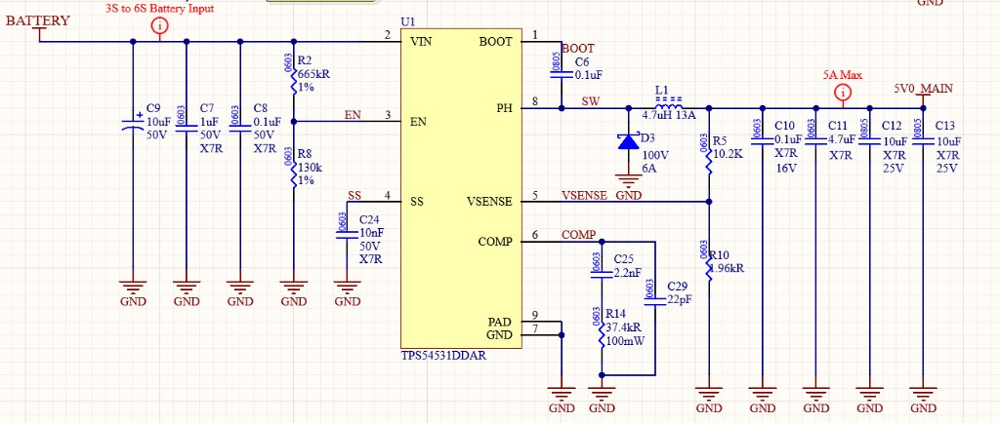
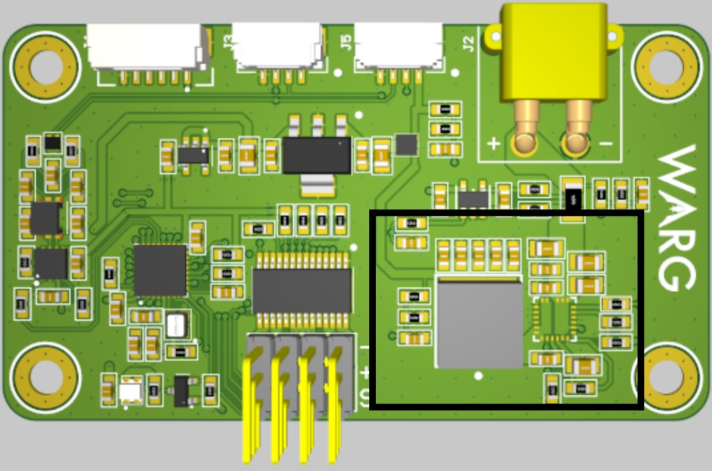
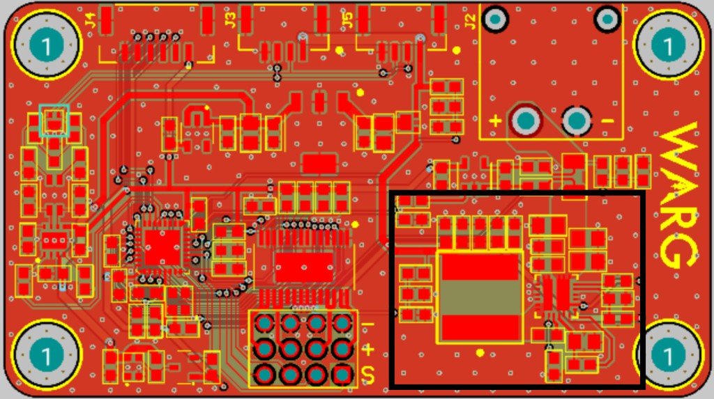

Power electronics · Drones
Integrated 6S to 6V Buck Converter
Non-synchronous buck converter stepping a 6S LiPo battery down to a steady 6V for a custom servo driver on a fixed-wing drone.



Overview
Non-synchronous buck converter stepping a 6S LiPo battery down to a steady 6V for a custom servo driver on a fixed-wing drone.
Notable features
- Programmable under-voltage lockout and soft start
- Fixed 570kHz switching frequency
- Integrated into the servo driver PCB
- Buck converter layout outlined in black on the board renders
- Designed in Altium Designer
Project details (Situation · Task · Action · Result)
Situation
Custom fixed-wing drone needed a steady, efficient, high-power way to deliver 6V to a custom servo driver from a 6S LiPo battery.
Task
Design a buck converter stepping 6S (up to 25.2V) down to 6V.
Action
Designed a non-synchronous buck converter with fixed 570kHz switching frequency; calculated component values, selected components, designed schematic/layout, and integrated the layout into the servo driver PCB.
Result
Board worked with minimal ripple/noise; servo driver was successfully used in the fixed-wing drone.